5 Почему глубокие нейронные сети трудно обучать?
Представьте, что вы инженер, которому поручили спроектировать
компьютер с нуля. Однажды вы сидите в своём кабинете, проектируете
логические схемы, расставляете вентили AND, вентили
OR и так далее, и тут входит начальник с плохими новостями.
Заказчик только что добавил неожиданное требование: схема всего
компьютера должна иметь глубину всего в два слоя:
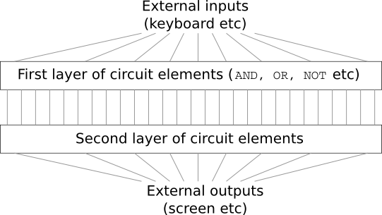
Вы ошеломлены и говорите начальнику: «Заказчик сошёл с ума!»
Начальник отвечает: «Я тоже так думаю. Но заказчик всегда получает то, что хочет».
На самом деле в ограниченном смысле заказчик вовсе не сошёл с ума.
Предположим, вам разрешено использовать особый логический вентиль,
позволяющий объединять операцией AND сколько угодно входов.
А ещё разрешён вентиль NAND со многими входами, то есть
вентиль, который выполняет AND над несколькими входами, а
затем инвертирует результат. Оказывается, с такими особыми вентилями
можно вычислить вообще любую функцию схемой глубиной всего в два
слоя.
Но если что-то возможно, это ещё не значит, что это хорошая идея. На практике, решая задачи проектирования схем (да и почти любые алгоритмические задачи), мы обычно начинаем с того, что выясняем, как решить подзадачи, а затем постепенно объединяем решения. Иными словами, мы строим решение через несколько уровней абстракции.
Например, пусть мы проектируем логическую схему для умножения двух чисел. Скорее всего, мы захотим собрать её из подсхем, выполняющих операции вроде сложения двух чисел. Подсхемы сложения двух чисел, в свою очередь, будут собраны из под-подсхем сложения двух битов. Очень грубо наша схема будет выглядеть так:
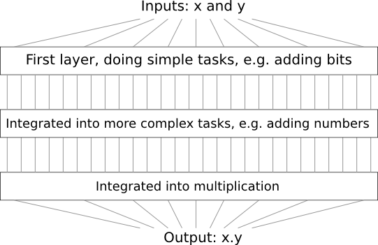
То есть итоговая схема содержит как минимум три слоя элементов. На самом деле слоёв, вероятно, будет больше трёх, поскольку подзадачи мы разобьём на более мелкие части, чем я описал. Но общая идея понятна.
Итак, глубокие схемы облегчают проектирование. Но они полезны не только для проектирования. Существуют математические доказательства того, что для некоторых функций очень неглубоким схемам требуется экспоненциально больше элементов, чем глубоким. Например, знаменитая серия статей начала 1980-х годов1 показала, что вычисление чётности набора битов неглубокой схемой требует экспоненциально много вентилей. Зато в более глубокой схеме чётность легко вычислить маленькой схемой: сначала вычисляется чётность пар битов, затем по этим результатам — чётность пар пар битов и так далее, быстро приходя к чётности всего набора. Так что глубокие схемы могут быть по своей природе гораздо мощнее неглубоких.
До сих пор в этой книге мы подходили к нейронным сетям как тот сумасшедший заказчик. Почти у всех сетей, с которыми мы работали, был всего один скрытый слой нейронов (плюс входной и выходной слои):
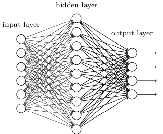
Эти простые сети оказались на удивление полезны: в предыдущих главах мы с помощью подобных сетей классифицировали рукописные цифры с точностью выше 98 процентов! Тем не менее интуитивно можно ожидать, что сети с гораздо большим числом скрытых слоёв будут мощнее:
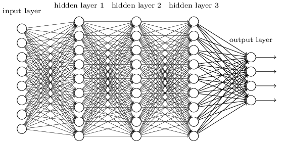
Такие сети могли бы использовать промежуточные слои для построения нескольких уровней абстракции — так же, как мы делаем это в булевых схемах. Например, при распознавании зрительных образов нейроны первого слоя могли бы научиться распознавать границы, нейроны второго — более сложные формы, скажем, треугольники или прямоугольники, составленные из границ. Третий слой распознавал бы ещё более сложные формы. И так далее. Похоже, что эти многочисленные уровни абстракции дают глубоким сетям весомое преимущество при обучении решению сложных задач распознавания образов. Более того, как и в случае схем, есть теоретические результаты, говорящие о том, что глубокие сети по своей природе мощнее неглубоких2.
Как обучать такие глубокие сети? В этой главе мы попробуем обучать глубокие сети нашей рабочей лошадкой — стохастическим градиентным спуском с обратным распространением. Но столкнёмся с трудностями: глубокие сети будут работать ненамного лучше неглубоких (если вообще лучше).
В свете сказанного выше эта неудача кажется удивительной. Вместо того чтобы отказаться от глубоких сетей, мы копнём глубже и попытаемся понять, что мешает их обучению. Присмотревшись, мы обнаружим, что разные слои глубокой сети учатся с совершенно разной скоростью. А именно: когда последние слои сети учатся хорошо, первые слои при обучении часто застревают, почти ничему не обучаясь. И это не просто невезение. Мы обнаружим, что у замедления обучения есть фундаментальные причины, связанные с использованием методов обучения на основе градиента.
Углубившись в проблему, мы узнаем, что может происходить и противоположное: первые слои учатся хорошо, а последние застревают. На самом деле мы обнаружим, что обучению градиентным спуском в глубоких многослойных нейронных сетях присуща внутренняя нестабильность. Из-за неё при обучении застревают либо первые, либо последние слои.
Всё это звучит как плохие новости. Но, вникая в эти трудности, мы начнём понимать, что нужно для эффективного обучения глубоких сетей. Так что эти исследования — хорошая подготовка к следующей главе, где мы применим глубокое обучение к задачам распознавания изображений.
5.1 Проблема исчезающего градиента
Итак, что идёт не так, когда мы пытаемся обучить глубокую сеть?
Чтобы ответить на этот вопрос, сначала вернёмся к случаю сети всего с одним скрытым слоем. Как обычно, полигоном для обучения и экспериментов нам послужит задача классификации цифр MNIST3.
При желании можете повторять всё за мной, обучая сети на своём компьютере. Конечно, можно и просто читать. Если же хотите повторять вживую, вам понадобятся Python 2.7, Numpy и копия кода, которую можно получить, клонировав соответствующий репозиторий из командной строки:
git clone https://github.com/mnielsen/neural-networks-and-deep-learning.gitЕсли вы не пользуетесь git, данные и код можно скачать здесь.
Нужно будет перейти в подкаталог src. Затем в интерактивной
оболочке Python загрузим данные MNIST:
>>> import mnist_loader
>>> training_data, validation_data, test_data = \
... mnist_loader.load_data_wrapper()Создадим сеть:
>>> import network2
>>> net = network2.Network([784, 30, 10])В этой сети 784 нейрона во входном слое, соответствующих \(28\times28=784\) пикселям входного изображения. Мы используем 30 скрытых нейронов и 10 выходных, соответствующих 10 возможным классам цифр MNIST («0», «1», «2», …, «9»).
Обучим сеть в течение 30 полных эпох, используя мини-пакеты по 10
обучающих примеров, скорость обучения \(\eta=0.1\) и параметр регуляризации \(\lambda=5.0\). По ходу обучения будем
следить за точностью классификации на validation_data4:
>>> net.SGD(training_data, 30, 10, 0.1, lmbda=5.0,
... evaluation_data=validation_data, monitor_evaluation_accuracy=True)Получаем точность классификации 96.48 процента (или около того — от прогона к прогону она немного меняется), сравнимую с нашими прежними результатами при похожей конфигурации.
Теперь добавим ещё один скрытый слой, тоже из 30 нейронов, и попробуем обучить сеть с теми же гиперпараметрами:
>>> net = network2.Network([784, 30, 30, 10])
>>> net.SGD(training_data, 30, 10, 0.1, lmbda=5.0,
... evaluation_data=validation_data, monitor_evaluation_accuracy=True)Точность классификации улучшается до 96.90 процента. Это обнадёживает: немного большая глубина помогает. Добавим ещё один скрытый слой из 30 нейронов:
>>> net = network2.Network([784, 30, 30, 30, 10])
>>> net.SGD(training_data, 30, 10, 0.1, lmbda=5.0,
... evaluation_data=validation_data, monitor_evaluation_accuracy=True)Это совсем не помогает. Результат даже падает обратно до 96.57 процента — почти как у исходной неглубокой сети. А если вставить ещё один скрытый слой:
>>> net = network2.Network([784, 30, 30, 30, 30, 10])
>>> net.SGD(training_data, 30, 10, 0.1, lmbda=5.0,
... evaluation_data=validation_data, monitor_evaluation_accuracy=True)Точность классификации снова падает — до 96.53 процента. Вероятно, это статистически незначимое падение, но и обнадёживающим его не назовёшь.
Такое поведение кажется странным. Интуитивно дополнительные скрытые слои должны позволить сети выучивать более сложные функции классификации, а значит, классифицировать лучше. Уж во всяком случае хуже стать не должно, ведь в худшем случае дополнительные слои могут просто ничего не делать5. Но происходит не это.
Так что же происходит? Будем считать, что дополнительные скрытые слои в принципе действительно могли бы помочь, а проблема в том, что наш алгоритм обучения не находит правильных весов и смещений. Мы хотим понять, что идёт не так в алгоритме обучения и как сделать лучше.
Чтобы разобраться, что идёт не так, наглядно представим, как учится сеть. Ниже показана часть сети [784,30,30,10], то есть сети с двумя скрытыми слоями по 30 нейронов. На каждом нейроне схемы есть маленькая полоска, показывающая, насколько быстро этот нейрон меняется в ходе обучения сети. Большая полоска означает, что веса и смещение нейрона меняются быстро, маленькая — что медленно. Точнее, полоски показывают градиент \(\partial C/\partial b\) для каждого нейрона, то есть скорость изменения стоимости по смещению нейрона. Ещё в главе 2 мы видели, что эта величина градиента определяет не только скорость изменения смещения при обучении, но и скорость изменения весов связей, входящих в нейрон. Не беспокойтесь, если не помните подробностей: нужно лишь помнить, что эти полоски показывают, насколько быстро меняются веса и смещение каждого нейрона в ходе обучения сети.
Чтобы не усложнять схему, я показал только шесть верхних нейронов в двух скрытых слоях. Входные нейроны я опустил, поскольку у них нет весов и смещений, которые нужно выучивать. Выходные нейроны я тоже опустил: мы сравниваем слои между собой, и разумнее всего сравнивать слои с одинаковым числом нейронов. Результаты показаны в самом начале обучения, то есть сразу после инициализации сети. Вот они6:
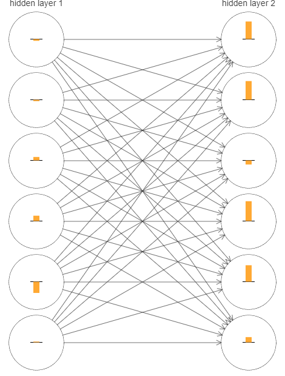
Сеть инициализирована случайно, так что неудивительно, что скорость обучения нейронов сильно разнится. Тем не менее бросается в глаза, что полоски во втором скрытом слое в основном гораздо больше, чем в первом. В результате нейроны второго скрытого слоя будут учиться заметно быстрее нейронов первого. Совпадение ли это, или нейроны второго скрытого слоя вообще, как правило, учатся быстрее нейронов первого?
Чтобы это выяснить, полезно иметь общий способ сравнения скорости обучения первого и второго скрытых слоёв. Для этого обозначим градиент через \(\delta^l_j=\partial C/\partial b^l_j\), то есть градиент для \(j\)-го нейрона \(l\)-го слоя7 Градиент \(\delta^1\) можно рассматривать как вектор, компоненты которого определяют, насколько быстро учится первый скрытый слой, а \(\delta^2\) — как вектор, компоненты которого определяют, насколько быстро учится второй скрытый слой. Длины этих векторов мы будем использовать как (грубые!) общие меры скорости обучения слоёв. Так, длина \(\|\delta^1\|\) измеряет скорость обучения первого скрытого слоя, а длина \(\|\delta^2\|\) — второго.
С этими определениями в той же конфигурации, что изображена выше, получаем \(\|\delta^1\| = 0.07...\) и \(\|\delta^2\|=0.31...\). Это подтверждает наше подозрение: нейроны второго скрытого слоя действительно учатся гораздо быстрее нейронов первого.
Что будет, если добавить ещё скрытые слои? При трёх скрытых слоях, в сети [784,30,30,30,10], скорости обучения слоёв оказываются равны 0.012, 0.060 и 0.283. И снова первые скрытые слои учатся гораздо медленнее последних. Добавим ещё один слой из 30 скрытых нейронов. Тогда скорости обучения равны 0.003, 0.017, 0.070 и 0.285. Закономерность сохраняется: первые слои учатся медленнее последних.
Мы смотрели на скорость обучения в начале обучения, то есть сразу после инициализации сетей. Как меняется скорость обучения в ходе обучения? Вернёмся к сети всего с двумя скрытыми слоями. Скорость обучения меняется так:
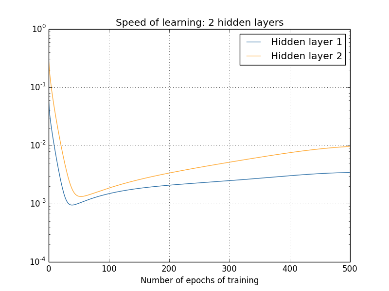
Для этих результатов я использовал пакетный градиентный спуск всего на 1000 обучающих изображениях в течение 500 эпох. Это несколько отличается от того, как мы обычно обучаем, — я не использовал мини-пакеты и взял лишь 1000 обучающих изображений вместо полного обучающего набора из 50 000. Я не пытаюсь хитрить или пускать вам пыль в глаза: просто стохастический градиентный спуск по мини-пакетам даёт гораздо более зашумлённые (хотя, если усреднить шум, очень похожие) результаты. Выбранные мной параметры — простой способ сгладить результаты, чтобы было видно, что происходит.
Так или иначе, как видите, два слоя начинают учиться с очень разной скоростью (что мы уже знаем). Затем скорость в обоих слоях очень быстро падает, после чего снова растёт. Но на всём протяжении первый скрытый слой учится гораздо медленнее второго.
А как насчёт более сложных сетей? Вот результаты похожего эксперимента, но на этот раз с тремя скрытыми слоями (сеть [784,30,30,30,10]):
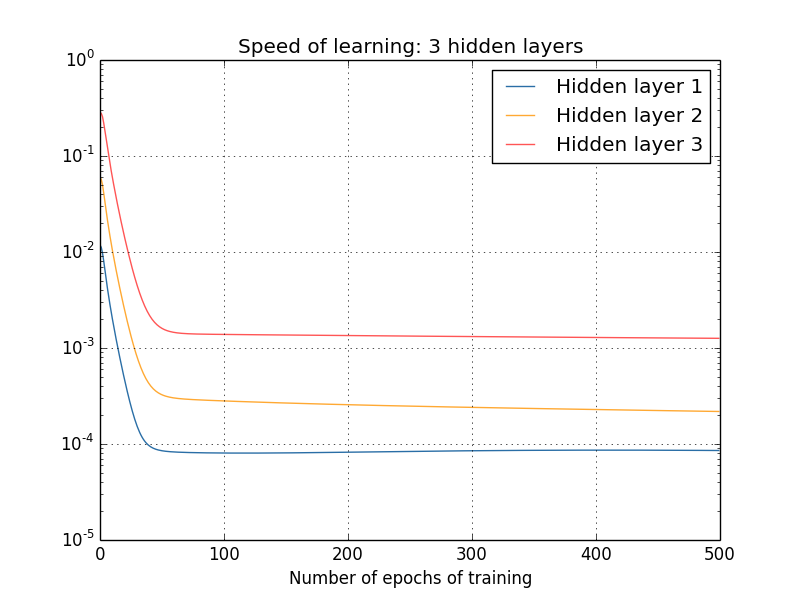
И снова первые скрытые слои учатся гораздо медленнее последних. Наконец, добавим четвёртый скрытый слой (сеть [784,30,30,30,30,10]) и посмотрим, что получится при обучении:
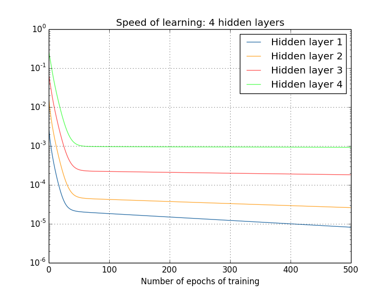
И снова первые скрытые слои учатся гораздо медленнее последних. В этом случае первый скрытый слой учится примерно в 100 раз медленнее последнего. Неудивительно, что раньше у нас были проблемы с обучением этих сетей!
Итак, важное наблюдение: по крайней мере в некоторых глубоких нейронных сетях градиент уменьшается по мере движения назад через скрытые слои. Это значит, что нейроны первых слоёв учатся гораздо медленнее нейронов последних. И хотя мы видели это лишь на одной сети, есть фундаментальные причины, по которым это происходит во многих нейронных сетях. Это явление известно как проблема исчезающего градиента8.
Почему возникает проблема исчезающего градиента? Можно ли её избежать? И как с ней справляться при обучении глубоких нейронных сетей? Скоро мы узнаем, что она не неизбежна, хотя и альтернатива не слишком привлекательна: иногда градиент в первых слоях становится гораздо больше! Это проблема взрывного роста градиента, и это не намного лучшая новость, чем исчезающий градиент. В более общем виде оказывается, что градиент в глубоких нейронных сетях нестабилен: в первых слоях он склонен либо взрываться, либо исчезать. Эта нестабильность — фундаментальная проблема обучения глубоких нейронных сетей на основе градиента. Её нужно понимать и по возможности принимать меры для её решения.
Одна из реакций на исчезающие (или нестабильные) градиенты — задуматься, такая ли это проблема на самом деле. Отвлечёмся ненадолго от нейросетей и представим, что мы пытаемся численно минимизировать функцию \(f(x)\) одной переменной. Разве не хорошая новость, если производная \(f'(x)\) мала? Разве это не значит, что мы уже близко к экстремуму? Похожим образом, может быть, малый градиент в первых слоях глубокой сети означает, что веса и смещения там почти не нужно подстраивать?
Конечно, это не так. Вспомним, что веса и смещения сети мы инициализировали случайно. Крайне маловероятно, что начальные веса и смещения будут хорошо справляться с тем, что мы хотим от сети. Конкретнее, рассмотрим первый слой весов в сети [784,30,30,30,10] для задачи MNIST. Из-за случайной инициализации первый слой отбрасывает большую часть информации о входном изображении. Даже если последующие слои тщательно обучены, им всё равно будет крайне трудно опознать входное изображение — просто потому, что у них недостаточно информации. Так что никак не может быть, чтобы первый слой почти не нуждался в обучении. Если мы хотим обучать глубокие сети, нужно понять, как справиться с проблемой исчезающего градиента.
5.2 Что вызывает проблему исчезающего градиента? Нестабильные градиенты в глубоких нейронных сетях
Чтобы понять, почему возникает проблема исчезающего градиента, рассмотрим простейшую глубокую нейронную сеть — с одним нейроном в каждом слое. Вот сеть с тремя скрытыми слоями:
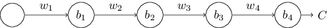
Здесь \(w_1,w_2,\ldots\) — веса, \(b_1,b_2,\ldots\) — смещения, а \(C\) — некоторая функция стоимости. Напомню, как это работает: выход \(a_j\) \(j\)-го нейрона равен \(\sigma(z_j)\), где \(\sigma\) — обычная сигмоидная функция активации, а \(z_j=w_ja_{j-1}+b_j\) — взвешенный вход нейрона. Стоимость \(C\) я нарисовал в конце, чтобы подчеркнуть, что она является функцией выхода сети \(a_4\): если фактический выход сети близок к желаемому, стоимость будет низкой, а если далёк — высокой.
Мы изучим градиент \(\partial C/\partial b_1\), относящийся к первому скрытому нейрону. Найдём выражение для \(\partial C/\partial b_1\), и, изучив его, поймём, почему возникает проблема исчезающего градиента.
Начну с того, что просто покажу выражение для \(\partial C/\partial b_1\). Выглядит оно пугающе, но на самом деле у него простая структура, которую я сейчас опишу. Вот это выражение (пока не обращайте внимания на сеть и заметьте, что \(\sigma'\) — просто производная функции \(\sigma\)):
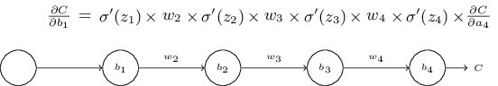
Структура выражения такова: в произведении есть множитель \(\sigma'(z_j)\) для каждого нейрона сети; множитель \(w_j\) для каждого веса сети; и последний множитель \(\partial C/\partial a_4\), соответствующий функции стоимости в конце. Заметьте, что каждый множитель выражения я поместил над соответствующей частью сети. Так что сама сеть служит мнемоникой для выражения.
Можете принять это выражение на веру и перейти к обсуждению того, как оно связано с проблемой исчезающего градиента. В этом нет ничего плохого, поскольку выражение — частный случай нашего прежнего обсуждения обратного распространения. Но у того, почему выражение верно, есть и простое объяснение, на которое интересно (а может, и поучительно) взглянуть.
Представим, что мы немного изменили смещение \(b_1\) на \(\Delta b_1\). Это запустит каскад изменений в остальной сети. Сначала изменится на \(\Delta a_1\) выход первого скрытого нейрона. Это, в свою очередь, изменит на \(\Delta z_2\) взвешенный вход второго скрытого нейрона. Затем на \(\Delta a_2\) изменится выход второго скрытого нейрона. И так далее, вплоть до изменения \(\Delta C\) стоимости на выходе. Имеем \[\frac{\partial C}{\partial b_1} \approx \frac{\Delta C}{\Delta b_1}.\tag{114}\label{eq:114}\] Это подсказывает, что выражение для градиента \(\partial C/\partial b_1\) можно найти, аккуратно проследив эффект каждого шага этого каскада.
Для этого подумаем, как \(\Delta b_1\) меняет выход \(a_1\) первого скрытого нейрона. Имеем \(a_1=\sigma(z_1)=\sigma(w_1a_0+b_1)\), поэтому \[\Delta a_1 \approx \frac{\partial \sigma(w_1 a_0+b_1)}{\partial b_1} \Delta b_1 = \sigma'(z_1) \Delta b_1. \tag{116}\label{eq:116}\] Множитель \(\sigma'(z_1)\) должен выглядеть знакомо: это первый множитель в заявленном нами выражении для градиента \(\partial C/\partial b_1\). Интуитивно этот множитель превращает изменение смещения \(\Delta b_1\) в изменение выходной активации \(\Delta a_1\). Изменение \(\Delta a_1\), в свою очередь, меняет взвешенный вход второго скрытого нейрона \(z_2=w_2a_1+b_2\): \[\Delta z_2 \approx \frac{\partial z_2}{\partial a_1} \Delta a_1 = w_2 \Delta a_1. \tag{118}\label{eq:118}\] Объединив выражения для \(\Delta z_2\) и \(\Delta a_1\), видим, как изменение смещения \(b_1\) распространяется по сети и влияет на \(z_2\): \[\Delta z_2 \approx \sigma'(z_1) w_2 \Delta b_1.\tag{119}\label{eq:119}\] И снова это должно выглядеть знакомо: теперь у нас есть первые два множителя заявленного выражения для градиента \(\partial C/\partial b_1\).
Можно продолжать в том же духе, прослеживая, как изменения распространяются по остальной сети. В каждом нейроне мы получаем множитель \(\sigma'(z_j)\), а через каждый вес — множитель \(w_j\). В итоге получаем выражение, связывающее итоговое изменение стоимости \(\Delta C\) с начальным изменением смещения \(\Delta b_1\): \[\Delta C \approx \sigma'(z_1) w_2 \sigma'(z_2) \ldots \sigma'(z_4) \frac{\partial C}{\partial a_4} \Delta b_1. \tag{120}\label{eq:120}\] Разделив на \(\Delta b_1\), действительно получаем нужное выражение для градиента: \[\frac{\partial C}{\partial b_1} = \sigma'(z_1) w_2 \sigma'(z_2) \ldots \sigma'(z_4) \frac{\partial C}{\partial a_4}. \tag{121}\label{eq:121}\]
Почему возникает проблема исчезающего градиента. Чтобы понять, почему возникает проблема исчезающего градиента, явно выпишем всё выражение для градиента: \[\frac{\partial C}{\partial b_1} = \sigma'(z_1) \, w_2 \sigma'(z_2) \,w_3 \sigma'(z_3) \, w_4 \sigma'(z_4) \, \frac{\partial C}{\partial a_4}.\tag{122}\label{eq:122}\] Если не считать последнего множителя, это выражение — произведение множителей вида \(w_j\sigma'(z_j)\). Чтобы понять, как ведёт себя каждый из них, посмотрим на график функции \(\sigma'\):
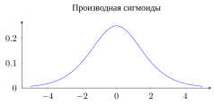
Производная достигает максимума в точке \(\sigma'(0)=1/4\). Если использовать наш стандартный подход к инициализации весов сети, веса выбираются из гауссова распределения со средним 0 и стандартным отклонением 1. Поэтому обычно будет выполняться \(|w_j|<1\). Сопоставив эти наблюдения, видим, что множители \(w_j\sigma'(z_j)\) обычно удовлетворяют \(|w_j\sigma'(z_j)|<1/4\). А произведение многих таких множителей будет экспоненциально уменьшаться: чем больше множителей, тем меньше произведение. Это уже начинает походить на возможное объяснение проблемы исчезающего градиента.
Чтобы сделать всё это нагляднее, сравним выражение для \(\partial C/\partial b_1\) с выражением для градиента по смещению более позднего слоя, скажем \(\partial C/\partial b_3\). Мы, конечно, не выводили явно выражение для \(\partial C/\partial b_3\), но оно строится по той же схеме, что описана выше для \(\partial C/\partial b_1\). Вот сравнение двух выражений:
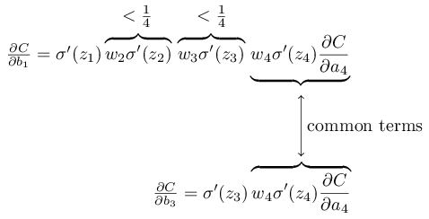
У двух выражений много общих множителей. Но в градиенте \(\partial C/\partial b_1\) есть два дополнительных множителя вида \(w_j\sigma'(z_j)\). Как мы видели, такие множители обычно меньше 1/4 по модулю. Поэтому градиент \(\partial C/\partial b_1\) обычно будет в 16 раз (или более) меньше, чем \(\partial C/\partial b_3\). В этом и состоит суть происхождения проблемы исчезающего градиента.
Конечно, это неформальное рассуждение, а не строгое доказательство того, что проблема исчезающего градиента обязательно возникнет. Есть несколько возможных лазеек. В частности, можно задаться вопросом, не могут ли веса \(w_j\) расти в ходе обучения. Если могут, то множители \(w_j\sigma'(z_j)\) в произведении могут перестать удовлетворять условию \(|w_j\sigma'(z_j)|<1/4\). И действительно, если множители станут достаточно большими — больше 1, — проблемы исчезающего градиента больше не будет. Вместо этого градиент будет экспоненциально расти по мере движения назад через слои. Вместо проблемы исчезающего градиента получится проблема взрывного роста градиента.
Проблема взрывного роста градиента. Рассмотрим явный пример, в котором градиент взрывается. Пример несколько искусственный: я подберу параметры сети как раз так, чтобы гарантированно получить взрывной рост градиента. Но, хотя пример искусственный, он ценен тем, что твёрдо устанавливает: взрывной рост градиента — не просто гипотетическая возможность, он действительно может происходить.
Чтобы получить взрывной рост градиента, нужны два шага. Во-первых, выбираем все веса сети большими, скажем, \(w_1=w_2=w_3=w_4=100\). Во-вторых, выбираем смещения так, чтобы множители \(\sigma'(z_j)\) были не слишком малы. Это довольно легко: достаточно выбрать смещения так, чтобы взвешенный вход каждого нейрона был равен \(z_j=0\) (и тогда \(\sigma'(z_j)=1/4\)). Например, мы хотим, чтобы \(z_1=w_1a_0+b_1=0\). Этого можно добиться, положив \(b_1=-100\times a_0\). Та же идея позволяет выбрать и остальные смещения. При этом все множители \(w_j\sigma'(z_j)\) оказываются равны \(100\times1/4=25\). При таком выборе градиент взрывается.
Проблема нестабильного градиента. Фундаментальная проблема здесь не столько в исчезающем или взрывающемся градиенте. Она в том, что градиент в первых слоях — произведение множителей от всех последующих слоёв. Когда слоёв много, такая ситуация по своей природе нестабильна. Все слои могут учиться примерно с одной скоростью, только если все эти произведения множителей примерно уравновешиваются. Без какого-то механизма или глубинной причины для такого равновесия крайне маловероятно, что оно возникнет просто случайно. Короче говоря, настоящая проблема в том, что нейронные сети страдают от проблемы нестабильного градиента. В результате, если использовать стандартные методы обучения на основе градиента, разные слои сети будут учиться с сильно различающейся скоростью.
5.2.1 Упражнение
Обсуждая проблему исчезающего градиента, мы воспользовались тем, что \(|\sigma'(z)|<1/4\). Предположим, мы используем другую функцию активации, производная которой может быть гораздо больше. Поможет ли это избежать проблемы нестабильного градиента?
Распространённость проблемы исчезающего градиента. Мы увидели, что в первых слоях глубокой сети градиент может либо исчезать, либо взрываться. На самом деле при использовании сигмоидных нейронов градиент обычно исчезает. Чтобы понять почему, снова рассмотрим выражение \(|w\sigma'(z)|\). Чтобы избежать проблемы исчезающего градиента, нужно \(|w\sigma'(z)|\geq1\). Может показаться, что это легко получить при очень большом \(w\). Однако это сложнее, чем кажется. Причина в том, что множитель \(\sigma'(z)\) тоже зависит от \(w\): \(\sigma'(z)=\sigma'(wa+b)\), где \(a\) — входная активация. Поэтому, делая \(w\) большим, нужно следить, чтобы одновременно не сделать малым \(\sigma'(wa+b)\). Это оказывается серьёзным ограничением. Дело в том, что, делая \(w\) большим, мы, как правило, делаем очень большим и \(wa+b\). Взглянув на график \(\sigma'\), видно, что тогда мы оказываемся на «крыльях» функции \(\sigma'\), где она принимает очень малые значения. Избежать этого можно, только если входная активация попадает в довольно узкий диапазон значений (в первой задаче ниже это качественное объяснение превращается в количественное). Иногда это случайно происходит. Но чаще — нет. Поэтому в типичном случае градиенты исчезают.
5.2.2 Задачи
Рассмотрим произведение \(|w\sigma'(wa+b)|\). Предположим, что \(|w\sigma'(wa+b)|\geq1\). (1) Покажите, что это возможно, только если \(|w|\geq4\). (2) Считая, что \(|w|\geq4\), рассмотрите множество входных активаций a, для которых \(|w\sigma'(wa+b)|\geq1\). Покажите, что множество a, удовлетворяющих этому ограничению, может занимать интервал шириной не более \[\frac2{|w|}\ln\left(\frac{|w|(1+\sqrt{1-4/|w|})}{2}-1\right).\tag{123}\label{eq:123}\] (3) Численно покажите, что приведённое выражение, ограничивающее ширину диапазона, максимально при \(|w|\approx6.9\), где оно равно \(\approx0.45\). Так что даже если всё идеально совпадёт, диапазон входных активаций, позволяющих избежать проблемы исчезающего градиента, всё равно довольно узок.
Тождественный нейрон. Рассмотрим нейрон с одним входом \(x\), соответствующим весом \(w_1\), смещением \(b\) и весом \(w_2\) на выходе. Покажите, что, подходящим образом выбрав веса и смещение, можно добиться \(w_2\sigma(w_1x+b)\approx x\) при \(x\in[0,1]\). Такой нейрон можно использовать как своего рода тождественный нейрон, то есть нейрон, выход которого совпадает (с точностью до умножения на весовой коэффициент) с его входом. Подсказка: полезно записать \(x=1/2+\Delta\), предположить, что \(w_1\) мало, и разложить в ряд Тейлора по \(w_1\Delta\).
5.3 Нестабильные градиенты в более сложных сетях
До сих пор мы изучали игрушечные сети с одним нейроном в каждом скрытом слое. А как насчёт более сложных глубоких сетей со многими нейронами в каждом скрытом слое?
На самом деле в таких сетях происходит во многом то же самое. В главе об обратном распространении мы видели, что градиент в \(l\)-м слое сети из L слоёв равен:
\[\delta^l = \Sigma'(z^l) (w^{l+1})^T \Sigma'(z^{l+1}) (w^{l+2})^T \ldots\Sigma'(z^L) \nabla_a C\tag{124}\label{eq:124}\] Здесь \(\Sigma'(z^l)\) — диагональная матрица, элементы которой — значения \(\sigma'(z)\) для взвешенных входов \(l\)-го слоя. \(w^l\) — матрицы весов разных слоёв. А \(\nabla_aC\) — вектор частных производных \(C\) по выходным активациям.
Это выражение гораздо сложнее, чем в случае одного нейрона. И всё же, если присмотреться, по сути его вид очень похож: много пар вида \((w^j)^T\Sigma'(z^j)\). Более того, у матриц \(\Sigma'(z^j)\) на диагонали малые элементы, не больше 1/4. Если матрицы весов \(w^j\) не слишком велики, каждый дополнительный множитель \((w^j)^T\Sigma'(z^l)\) стремится уменьшить вектор градиента, что приводит к исчезающему градиенту. В более общем плане большое число множителей в произведении ведёт к нестабильному градиенту, как и в нашем предыдущем примере. На практике в сигмоидных сетях эмпирически обычно обнаруживается, что градиенты в первых слоях исчезают экспоненциально быстро. В результате в этих слоях замедляется обучение. Это замедление — не просто случайность или неудобство: это фундаментальное следствие выбранного нами подхода к обучению.
5.4 Другие препятствия на пути глубокого обучения
В этой главе мы сосредоточились на исчезающих — и, шире, нестабильных — градиентах как на препятствии для глубокого обучения. На самом деле нестабильные градиенты — лишь одно из препятствий, хотя и важное, фундаментальное. Многие текущие исследования направлены на то, чтобы лучше понять трудности, возникающие при обучении глубоких сетей. Не буду делать исчерпывающий обзор этой работы, а лишь кратко упомяну пару статей, чтобы дать представление о вопросах, которые сейчас задают исследователи.
Первый пример: в 2010 году Глоро и Бенжио9 нашли свидетельства того, что использование сигмоидных функций активации может создавать проблемы при обучении глубоких сетей. В частности, они обнаружили, что из-за сигмоид активации последнего скрытого слоя в начале обучения насыщаются около 0, что существенно замедляет обучение. Они предложили несколько альтернативных функций активации, которые, по-видимому, меньше страдают от этой проблемы насыщения.
Второй пример: в 2013 году Суцкевер, Мартенс, Даль и Хинтон10 изучили влияние на глубокое обучение как случайной инициализации весов, так и расписания момента в стохастическом градиентном спуске с моментом. В обоих случаях удачный выбор существенно влиял на возможность обучать глубокие сети.
Эти примеры говорят о том, что вопрос «Почему глубокие сети трудно обучать?» сложен. В этой главе мы сосредоточились на нестабильностях, связанных с обучением глубоких сетей на основе градиента. Результаты, описанные в двух последних абзацах, говорят о том, что свою роль играют также выбор функции активации, способ инициализации весов и даже детали реализации обучения градиентным спуском. И, конечно, важны выбор архитектуры сети и других гиперпараметров. Так что трудность обучения глубоких сетей может определяться многими факторами, и понимание их всех — всё ещё предмет текущих исследований. Всё это звучит довольно мрачно и пессимистично. Но хорошая новость в том, что в следующей главе мы повернём ситуацию в свою пользу и разработаем несколько подходов к глубокому обучению, которые в той или иной мере позволяют преодолеть или обойти все эти трудности.